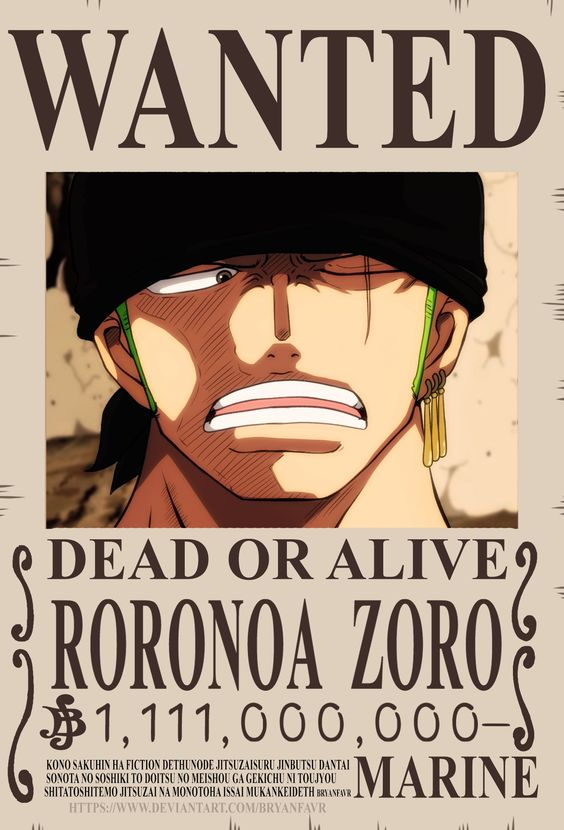

One Piece
Eiichiro Oda
"One Piece" es un manga y anime que sigue las aventuras de Monkey D. Luffy,
un joven que obtiene poderes elásticos después de comer una Fruta del Diablo.
Luffy sueña con convertirse en el Rey de los Piratas y forma una tripulación llamada los Piratas del Sombrero de Paja.
Juntos, navegan por el peligroso Grand Line en busca del legendario tesoro conocido como el "One Piece".
En su viaje, enfrentan enemigos poderosos,
desafíos emocionales y descubren secretos oscuros mientras desafían al Gobierno Mundial y a otros piratas.
La serie se centra en la amistad, la aventura y la búsqueda de la libertad en un mundo lleno de misterio y maravillas.
